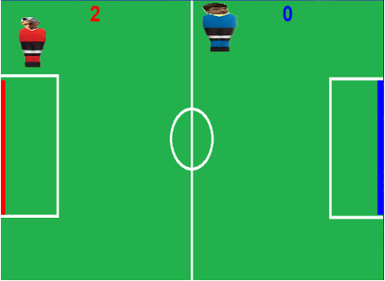
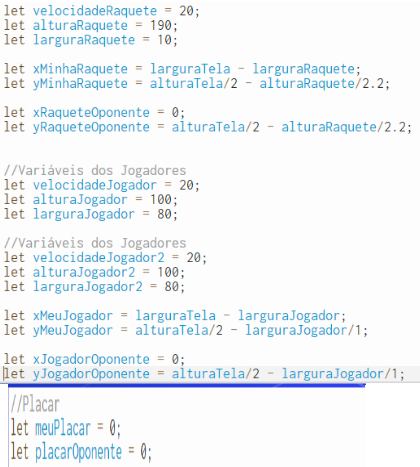

Neste Trabalho iremos falar um pouco sobre o nosso jogo e explicando cada código sobre ele.
Aqui está o comando do Let (Variáveis, Atores e Dimensões);
Nesse código é a onde chamamos os jogadores, a imagem de fundo e ocorre o carregamento dos arquivos;
Ocorre somente uma vez
É uma função no qual faz um looping, sempre desenha o que tem dentro. Nesse Exemplo é a imagem de fundo;
Aqui foi onde Fizemos a Tela
Inicial Do jogo
Nesta Função ela chama
as outras funções e aqui verifica o jogador
que ganhou
Nesse código mostra o qual jogador venceu e aparece com uma tela final;
No qual a função letrasVenceu é o jogador da Esquerda (jogador Vermelho)e a função setasVenceu
(jogador Azul) é o jogador da direita;
Nessa função mostra os pontos de jogadores acima de cada um e com a cor de cada jogador
Nessa Função acontece as colisões da bolinha com as raquetes que no caso são os gols que só vale gol se a bolinha colidir com a raquete;
Nesse código é igual ao anterior Tem a colisão dos jogadores na bolinha e nas laterais,Aqui soma velocidade a bolinha quando um dos jogadores fazem ponto;
Nessa função é a onde se inicializa o atores que nesse caso são as raquetes(gols), os dois jogadores e mostra a bolinha também;
Nessa função é a onde se inicializa o atores que nesse caso são as raquetes(gols), os dois jogadores e mostra a bolinha também;
Nessa função acontece o movimento da bolinha no qual ela parte de um determinado lugar e vai passeando na tela ;
Aqui acontece o último código no qual tem uma colisão nas bordas laterais,superiores e inferiores